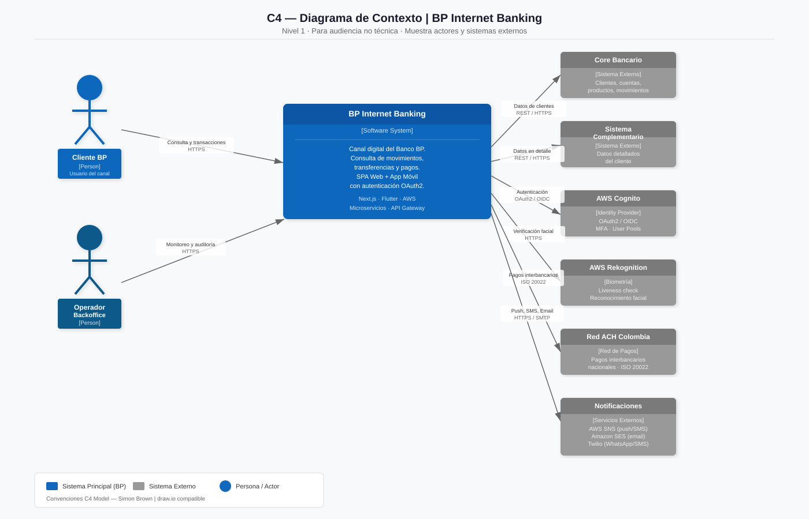
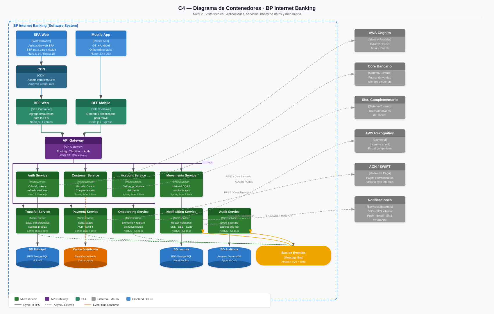
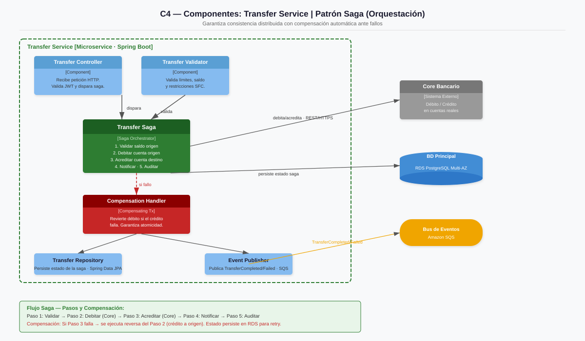
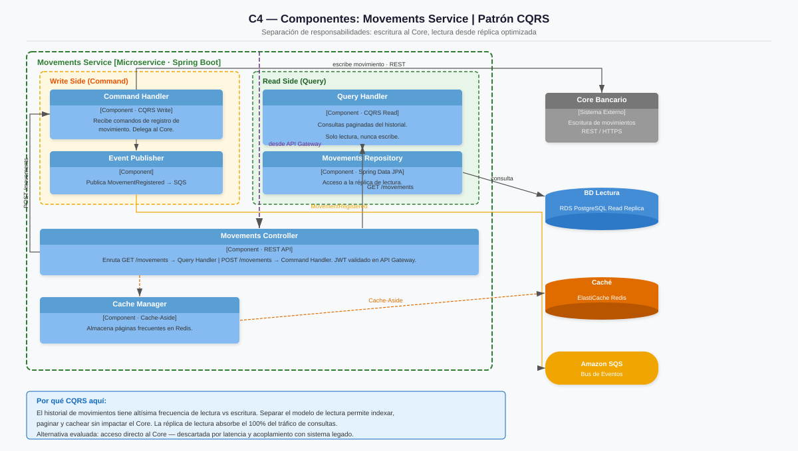
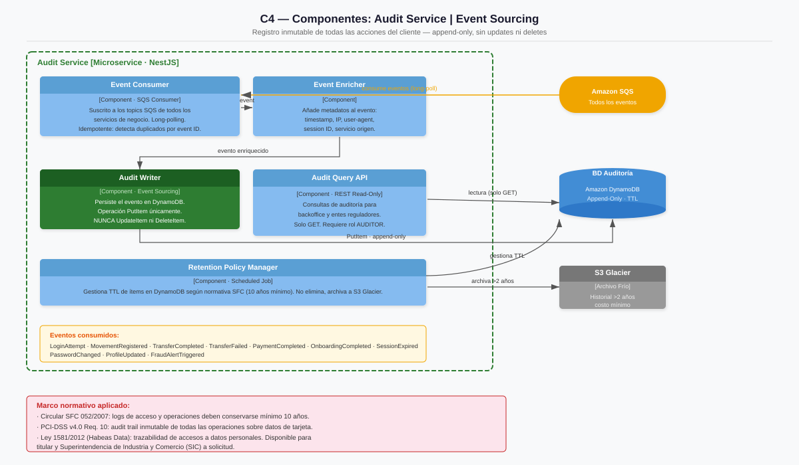
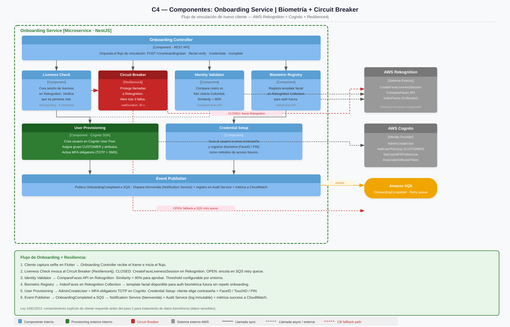
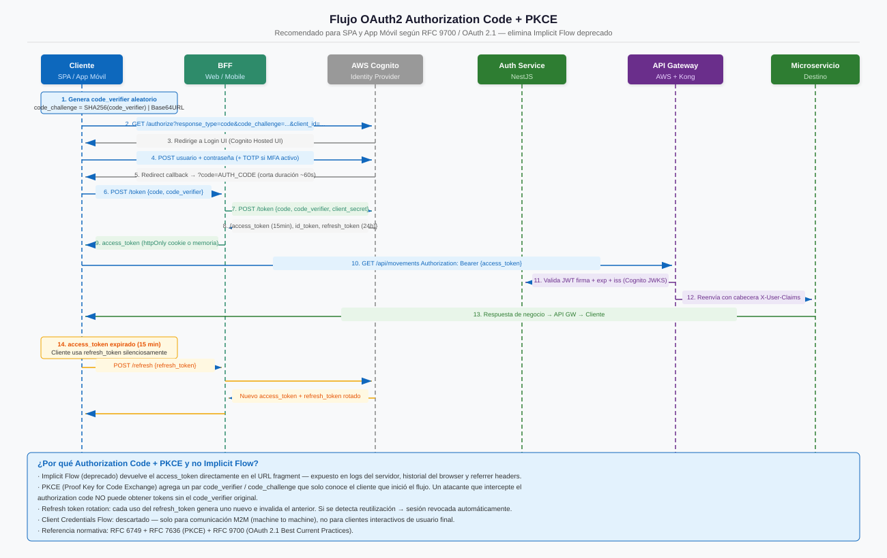
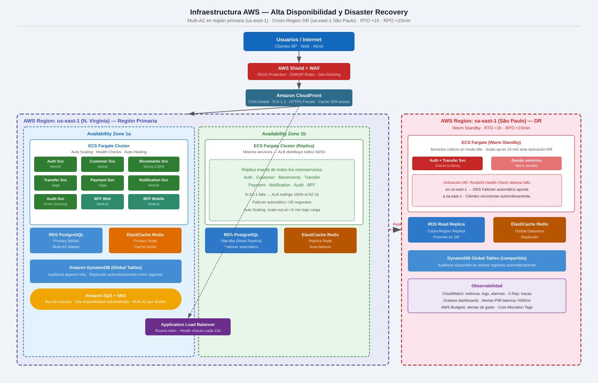
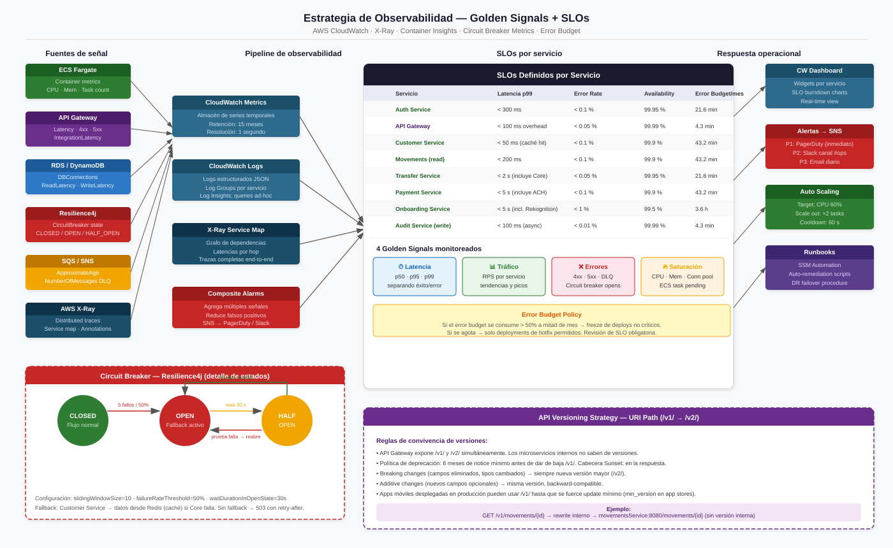

🏦
Documento de Arquitectura
BP Internet Banking
Arquitectura de Solución — Modelo C4 · AWS · Microservicios
Este documento describe la arquitectura completa del canal digital bancario BP Internet Banking.
Cubre el modelo C4 (Contexto, Contenedores y Componentes), decisiones arquitectónicas con justificación
técnica y normativa, cumplimiento regulatorio colombiano, estrategia de costos AWS y métricas de madurez.
La solución está diseñada para alta disponibilidad (99.95%), cumplimiento PCI-DSS v4.0 y
Circular SFC 052/2007, y escalabilidad horizontal sin rediseño hasta 2 000 000 MAU.
Tabla de Contenido
1. Resumen Ejecutivo§ 1
2. Contexto y Alcance§ 2
3. Modelo C4 — Diagramas de Arquitectura§ 3
3.1 Nivel 1 — Contexto§ 3.1
3.2 Nivel 2 — Contenedores§ 3.2
3.3 Nivel 3 — Componentes§ 3.3
4. Decisiones Arquitectónicas (ADR)§ 4
4.1 ADR-001 — Nube: AWS sobre Azure
4.2 ADR-002 — Frontend Web: Next.js
4.3 ADR-003 — Mobile: Flutter
4.4 ADR-004 — Auth: OAuth2 PKCE
4.5 ADR-005 — Transferencias: Patrón Saga
4.6 ADR-006 — Movimientos: CQRS
4.7 ADR-007 — Auditoría: Event Sourcing
4.8 ADR-008 — BFF: Backend for Frontend
4.9 ADR-009 — Resiliencia: Circuit Breaker
4.10 ADR-010 — API Versioning: /v1/
4.11 ADR-011 — Secrets Manager + KMS
4.12 ADR-012 — Observabilidad y SLOs
5. Marco Normativo y Regulatorio§ 5
6. Estrategia de Costos AWS§ 6
7. Madurez Arquitectónica — Radar§ 7
8. Conclusiones§ 8
BP Internet Banking es un canal digital bancario construido sobre una arquitectura de microservicios
en AWS, diseñada para soportar las operaciones críticas de una entidad financiera colombiana bajo
supervisión de la Superintendencia Financiera de Colombia (SFC).
Objetivo principal: Proveer operaciones bancarias digitales (consultas, transferencias, pagos, onboarding facial)
con alta disponibilidad (99.95% SLA), latencia sub-segundo para operaciones de lectura, y
cumplimiento total de PCI-DSS v4.0 y Circular SFC 052/2007.
Principios de diseño aplicados
- Desacoplamiento: 9 microservicios independientes comunicados por eventos (SQS/SNS). Cada servicio tiene su propia base de datos.
- Alta Disponibilidad: Multi-AZ en todas las capas con datos. Auto-scaling en ECS Fargate. DR pasivo en us-west-2 con RTO < 15 min.
- Seguridad por diseño: OAuth2 PKCE, MFA obligatorio, TLS 1.3 en tránsito, KMS en reposo, WAF + Shield en borde. Zero-trust entre microservicios.
- Observabilidad nativa: CloudWatch, X-Ray con Service Map, Container Insights. SLOs definidos y medidos por servicio.
- Escalabilidad horizontal: Arquitectura desacoplada permite escalar de 50 000 a 2 000 000 MAU sin rediseño estructural.
Stack tecnológico principal
| Capa | Tecnología elegida | Alternativa evaluada |
|---|
| Frontend Web | Next.js 14 + App Router | Angular 17 |
| App Móvil | Flutter 3.x (iOS + Android) | React Native |
| API Gateway | AWS API Gateway + Kong | NGINX + HAProxy |
| Microservicios | Spring Boot 3.x en ECS Fargate | EC2 Auto Scaling Groups |
| Base de datos | RDS PostgreSQL Multi-AZ | MySQL RDS |
| Caché | ElastiCache Redis | Memcached |
| Eventos | Amazon SQS + SNS | Apache Kafka (MSK) |
| Identidad / Auth | Amazon Cognito + OAuth2 PKCE | Keycloak on-prem |
| Biometría Facial | AWS Rekognition FaceLiveness | Azure Face API |
| Secretos | AWS Secrets Manager + KMS CMK | SSM Parameter Store |
| Observabilidad | CloudWatch + X-Ray + Container Insights | Datadog / New Relic |
Actores del sistema
| Actor | Tipo | Descripción |
|---|
| Cliente Banco BP | Usuario final | Accede a través de SPA Web o App Móvil para consultar saldos, transferir fondos, pagar servicios y completar el onboarding digital. |
| Administrador Bancario | Usuario interno | Gestiona usuarios, configura límites de transferencia y accede a reportes de cumplimiento y auditoría. |
| Core Bancario (legado) | Sistema externo | Sistema centralizado que contiene los registros maestros de cuentas y saldos. Integración via REST/SOAP. |
| Pasarela de Pagos (PSE) | Sistema externo | Procesa pagos a terceros, servicios públicos y recargas. |
| UIAF | Ente regulador | Recibe reportes de operaciones inusuales según SARLAFT. |
| AWS Rekognition | Servicio cloud | Provee liveness check y face matching para el onboarding biométrico. |
| Amazon Cognito | Servicio cloud | Gestiona el ciclo de vida de identidades, tokens JWT y MFA. |
Funcionalidades en alcance
- Consulta de saldos y movimientos (CQRS, caché Redis)
- Transferencias entre cuentas propias y terceros (Patrón Saga)
- Pago de servicios y obligaciones (PSE)
- Onboarding digital con biometría facial y liveness check
- Autenticación multifactor (MFA) con OAuth2 Authorization Code + PKCE
- Auditoría inmutable de todas las operaciones (Event Sourcing + DynamoDB)
- Notificaciones en tiempo real post-transacción (SNS + SQS)
Fuera de alcance: créditos y préstamos, inversiones, seguros, ATM/POS físico, integración con sistemas de terceros distintos a PSE y Core Bancario.
Se utiliza el Modelo C4 (Context, Containers, Components, Code) como notación estándar
para comunicar la arquitectura en múltiples niveles de abstracción, desde la vista de negocio
hasta los componentes internos de cada microservicio.
3.1 Nivel 1 — Contexto
Muestra BP Internet Banking como caja negra y sus relaciones con actores y sistemas externos.

Figura 1 — C4 Level 1: System Context. BP Internet Banking y sus dependencias externas.
3.2 Nivel 2 — Contenedores
Descompone el sistema en contenedores de software: frontends, BFF, API Gateway, microservicios y bases de datos.

Figura 2 — C4 Level 2: Container Diagram. Todos los contenedores con tecnología y comunicación.
3.3 Nivel 3 — Componentes
Se desarrollan los microservicios con mayor complejidad de diseño.
Transfer Service — Patrón Saga

Figura 3 — Transfer Service: Saga de orquestación con compensación.
Movements Service — CQRS

Figura 4 — Movements Service: Command Query Responsibility Segregation.
Audit Service — Event Sourcing

Figura 5 — Audit Service: Event Sourcing con DynamoDB append-only.
Onboarding Service — Biometría + Circuit Breaker

Figura 6 — Onboarding Service: Biometría facial, liveness check y Circuit Breaker Resilience4j.
Flujo OAuth2 Authorization Code + PKCE

Figura 7 — OAuth2 Authorization Code Flow con PKCE.
Infraestructura AWS — Alta Disponibilidad y DR

Figura 8 — Infraestructura AWS: Multi-AZ, DR pasivo us-west-2, CloudFront, Shield.
Observabilidad — Golden Signals + SLOs

Figura 9 — Observabilidad: Golden Signals, SLOs por servicio, Circuit Breaker state machine.
Cada decisión fue evaluada frente a al menos una alternativa y se justifica técnica y normativamente.
ADR-001 — ☁️ Nube: AWS sobre Azure
DecisiónAmazon Web Services como proveedor de nube principal.
Justificación 1 — Madurez en sector financieroAWS tiene mayor adopción en banca latinoamericana a 2026. Cognito, Rekognition, Macie, Shield son servicios maduros con certificaciones PCI-DSS y SOC2 propias.
Justificación 2 — Ecosistema integradoLa combinación Cognito + Rekognition + SQS + DynamoDB resuelve los requerimientos sin necesidad de terceros adicionales, reduciendo la superficie de ataque.
vs Azure AD B2Cvs Azure Face API
ADR-002 — ⚛️ Frontend Web: Next.js sobre Angular
DecisiónNext.js 14 con App Router y RSC como framework para la SPA web.
Justificación 1 — SSR y Core Web VitalsNext.js ofrece Server-Side Rendering nativo que mejora el LCP crítico para banca. Una pantalla de saldo carga en <1s percibido.
Justificación 2 — Ecosistema y talentoReact tiene 5× más desarrolladores disponibles que Angular en Colombia. Menor riesgo de bus factor y facilita contratación futura.
Alternativa evaluada: Angular 17
ADR-003 — 📱 Mobile: Flutter sobre React Native
DecisiónFlutter 3.x como framework multiplataforma para iOS y Android.
Justificación 1 — Rendimiento nativo realFlutter compila a código nativo ARM. No usa JavaScript bridge como React Native, crítico para la cámara del Onboarding facial y la biometría.
Justificación 2 — Un único codebase estableFlutter tiene garantía de Google con roadmap de largo plazo. El plugin local_auth soporta FaceID, TouchID y PIN oficialmente.
Alternativa evaluada: React Native
ADR-004 — 🔐 Autenticación: OAuth2 Authorization Code + PKCE
DecisiónAuthorization Code Flow + PKCE para SPA y App Móvil via Amazon Cognito.
Justificación 1 — Seguridad contra intercepciónPKCE garantiza que solo el cliente que inició el flujo puede canjear el authorization code. Un atacante MitM que capture el code no puede obtener tokens sin el code_verifier.
Justificación 2 — Estándar RFC 9700 (OAuth 2.1)RFC 9700 depreca Implicit Flow y Password Grant. PKCE es el único flujo recomendado para clientes públicos según el estándar vigente.
Descartado: Implicit Flow (deprecado)Descartado: Password Grant
ADR-005 — 🔄 Transferencias: Patrón Saga con Orquestación
DecisiónSaga de orquestación con compensación para garantizar consistencia eventual en transferencias distribuidas.
Justificación 1 — Sin transacción distribuida disponibleEl débito ocurre en el Core y el crédito también, sin 2PC disponible entre sistemas heterogéneos. Saga es el único patrón que permite consistencia eventual con compensación automática sin bloqueos.
Justificación 2 — Trazabilidad regulatoria SFCCada paso de la Saga queda persistido en RDS. Si hay disputa, se puede reconstruir exactamente qué pasó, cuándo y el estado de compensación.
Alternativa descartada: 2PC (acoplamiento fuerte)
ADR-006 — 📖 Movimientos: CQRS con Réplica de Lectura
DecisiónCommand Query Responsibility Segregation con réplica de lectura RDS dedicada para consulta de movimientos.
Justificación 1 — Ratio lectura/escritura asimétricoUn cliente típico consulta sus movimientos 10–20 veces por cada 1 que los genera. CQRS permite indexar y optimizar el modelo de lectura sin impactar el Core de escritura.
Justificación 2 — Desacoplamiento del Core legadoLa réplica de lectura absorbe todo el tráfico de consultas, reduciendo la carga del Core en ~90%.
ADR-007 — 📝 Auditoría: Event Sourcing con DynamoDB
DecisiónEvent Sourcing con DynamoDB en modo append-only para el log de auditoría. Retención 10 años. Archivado a S3 Glacier.
Justificación 1 — Inmutabilidad regulatoria (SFC 052)La Circular SFC 052/2007 exige logs de operaciones que no puedan ser alterados. Event Sourcing por diseño no permite UPDATE ni DELETE — cada acción es un evento nuevo.
Justificación 2 — Escalabilidad DynamoDBDynamoDB escala horizontalmente sin límite. A 10 años de retención con millones de eventos, no hay degradación de rendimiento en escrituras que PostgreSQL no podría garantizar.
ADR-008 — 🧠 BFF: Backend for Frontend (×2)
DecisiónUn BFF específico para SPA Web y otro para App Móvil, desplegados como microservicios independientes en ECS Fargate.
Justificación 1 — Contratos independientesLa SPA necesita datos enriquecidos para un dashboard complejo. La app móvil necesita payloads mínimos para bajo ancho de banda. Un API único genera acoplamiento y versiones conflictivas.
Justificación 2 — Seguridad diferenciadaEl BFF Web maneja cookies httpOnly seguras. El BFF Mobile maneja tokens en memoria + certificate pinning. Separar permite aplicar políticas de seguridad específicas a cada canal.
ADR-009 — ⚡ Resiliencia: Circuit Breaker con Resilience4j
DecisiónPatrón Circuit Breaker con Resilience4j en todos los microservicios Spring Boot que llaman al Core Bancario o servicios externos.
Justificación 1 — Protección del Core legadoEl Core tiene SLA ~99.5%. Sin circuit breaker, un timeout provoca cascada de fallos. El breaker abre tras 5 fallos consecutivos y retorna respuesta degradada (caché Redis) durante 30 segundos.
Justificación 2 — Observabilidad del estadoResilience4j expone métricas (CLOSED/OPEN/HALF_OPEN) a CloudWatch. Se generan alarmas automáticas cuando el breaker abre, permitiendo reacción proactiva antes de que el cliente lo perciba.
Alternativa evaluada: Istio (descartado — complejidad en ECS)Descartado: Hystrix (deprecated)
ADR-010 — 🔢 API Versioning: URI Path (/v1/)
DecisiónVersioning por path URI (/v1/movements, /v2/movements) gestionado en API Gateway. Política de deprecación con 6 meses de notice.
Justificación 1 — Visibilidad en logs y trazasLas versiones en el URI son visibles en CloudWatch y X-Ray sin configuración adicional. Header versioning es más purista pero introduce complejidad en debugging y caching de CloudFront.
Justificación 2 — Compatibilidad con clientes móvilesLas apps Flutter en producción no se actualizan instantáneamente. La coexistencia de /v1/ y /v2/ permite migración gradual sin forzar actualizaciones.
Alternativa: Header VersioningAlternativa: Query param
ADR-011 — 🔑 Secrets Management: AWS Secrets Manager + KMS CMK
DecisiónTodos los secretos se almacenan en AWS Secrets Manager con rotación automática. Ningún secreto en variables de entorno ni en código fuente. Encriptación con KMS Customer Managed Key.
Justificación 1 — Rotación sin downtimeSecrets Manager rota credenciales RDS automáticamente cada 30 días via Lambda. El servicio en ECS recibe el secreto nuevo sin reinicio gracias al SDK que llama GetSecretValue en cada conexión.
Justificación 2 — Cumplimiento PCI-DSS Req. 3.5PCI-DSS v4.0 exige protección de claves criptográficas. Secrets Manager con KMS CMK cumple el requisito y genera audit trail via CloudTrail.
Prohibido: secretos en .env o repositorioDescartado: SSM Parameter Store (sin rotación nativa)
ADR-012 — 📊 Observabilidad: Golden Signals + SLOs por Servicio
DecisiónEstrategia de observabilidad basada en los 4 Golden Signals con SLOs definidos por servicio y alertas proactivas.
SLOs definidos
- Auth Service: p99 latencia < 300 ms · Error rate < 0.1%
- Movements (read): p99 < 200 ms · Availability 99.9%
- Transfer Service: p99 < 2 s · Error rate < 0.05%
- Onboarding: p99 < 5 s · Liveness success > 95%
- API Gateway: p99 < 100 ms overhead · Availability 99.95%
Justificación — Alertas proactivas vs reactivasCon SLOs y error budgets, se detecta degradación antes de impactar al cliente. CloudWatch Composite Alarms y X-Ray Service Map muestran el grafo de dependencias en tiempo real.
CloudWatchX-RayContainer InsightsError Budget Policy
La arquitectura fue diseñada con cumplimiento regulatorio como restricción no negociable, no como capa adicional.
🔒 PCI-DSS v4.0
Aplica: toda transacción que involucre datos de tarjeta o instrumentos de pago.
- Req. 2: No usar defaults de fábrica — Secrets Manager con rotación automática.
- Req. 6: Sistemas seguros — OWASP Top 10 implementado en arquitectura.
- Req. 8: MFA obligatorio — Cognito con segundo factor en todas las operaciones.
- Req. 10: Logs de auditoría inmutables — Event Sourcing + DynamoDB append-only.
- Req. 12: Política de seguridad — documentada y vinculada al SGSI ISO 27001.
Mandatorio
📋 Circular SFC 052/2007
Aplica: canales electrónicos de entidades vigiladas por la Superintendencia Financiera de Colombia.
- Doble factor de autenticación para canales digitales — implementado con Cognito MFA.
- Cifrado en tránsito (TLS 1.3) y en reposo (KMS CMK).
- Logs de operaciones mínimo 10 años — DynamoDB + S3 Glacier.
- Plan de continuidad BCP/DRP — DR pasivo us-west-2, RTO < 15 min.
- Notificación obligatoria post-transacción — SNS → notificaciones push / email.
Mandatorio Colombia
🧾 Ley 1581/2012 — Habeas Data
Aplica: tratamiento de datos personales de clientes colombianos.
- Consentimiento explícito para datos biométricos en el flujo de onboarding.
- Derecho a conocer, actualizar y suprimir datos — implementado en el perfil de usuario.
- Registro ante SIC de bases de datos con datos sensibles.
- Datos biométricos cifrados en reposo con KMS CMK. No se almacenan imágenes del rostro.
Mandatorio Colombia
💳 FATF / GAFI — AML/KYC (SARLAFT)
Aplica: prevención de lavado de activos y financiamiento del terrorismo.
- Onboarding facial como mecanismo de KYC digital — Rekognition + liveness check.
- Límites de transferencia configurables por nivel de riesgo del cliente.
- Registro de operaciones inusuales para reporte a UIAF.
- Monitoreo de patrones transaccionales — Audit Service con Event Sourcing.
Mandatorio
🔑 OWASP Top 10 — 2025
Aplica: seguridad de aplicaciones web y APIs.
| Riesgo OWASP | Control implementado |
|---|
| A01 — Broken Access Control | RBAC en Cognito + API Gateway policies |
| A02 — Cryptographic Failures | TLS 1.3 en tránsito · KMS CMK en reposo |
| A03 — Injection | ORMs (Spring Data JPA) + prepared statements |
| A05 — Security Misconfiguration | IaC (Terraform) con revisión de seguridad |
| A07 — Auth Failures | MFA + rate limiting en API GW + account lockout |
| A09 — Security Logging | Event Sourcing + CloudWatch + CloudTrail |
Implementado en arquitectura
🌐 ISO 27001 / 27005
Aplica: gestión de seguridad de la información.
- SGSI implementado con políticas, controles y métricas medibles.
- Gestión de riesgos tecnológicos documentada con análisis de impacto.
- Pruebas de penetración periódicas (mínimo anual).
- Gestión de vulnerabilidades y parches — Amazon Inspector integrado en CI/CD.
Best Practice
Estimados mensuales para una carga inicial de ~50 000 MAU con pico de 500 req/s.
Región principal: us-east-1. DR pasivo en us-west-2.
Calculado con AWS Pricing Calculator (mayo 2026).
Desglose por servicio
| Servicio AWS |
Configuración |
Costo/mes (USD) |
Estrategia de optimización |
| ECS Fargate — Microservicios | 9 servicios × 0.5 vCPU / 1 GB RAM, auto-scaling 2–6 tasks | ~$420 | Savings Plans Compute 1 año → −20% |
| ECS Fargate — BFF (×2) | 2 BFF × 0.5 vCPU / 1 GB RAM, min 2 tasks | ~$95 | Consolidado con Savings Plan de microservicios |
| RDS PostgreSQL Multi-AZ | db.t4g.medium Multi-AZ + 100 GB gp3 + Read Replica | ~$310 | Reserved Instance 1 año → −40% (~$186/mes) |
| Amazon DynamoDB | On-Demand. ~5M escrituras/mes, 2M lecturas/mes | ~$28 | TTL + S3 Glacier para archivado >2 años → −80% almacenamiento |
| ElastiCache Redis | cache.t4g.small, 1 primario + 1 réplica | ~$55 | Reserved Node 1 año → −35% |
| Amazon SQS + SNS | ~10M mensajes/mes SQS + 5M notificaciones SNS | ~$12 | Batching de mensajes reduce costo por API call |
| AWS API Gateway (HTTP API) | ~30M req/mes. HTTP API vs REST API | ~$30 | HTTP API es 71% más barato que REST API |
| Amazon CloudFront | 100 GB desde origen + 1 TB desde edge/mes | ~$22 | Cache hit ratio >90%. Price Class 100 (US/EU) |
| Amazon Cognito | 50 000 MAU — dentro del free tier | ~$0 | Free tier. A partir de 50 001 MAU: $0.0055/MAU adicional |
| AWS Rekognition | ~2 000 onboardings/mes × FaceLiveness + CompareFaces | ~$18 | Solo en onboarding, no en cada login |
| AWS Secrets Manager | ~30 secretos con rotación mensual | ~$18 | Consolidar secretos por entorno |
| CloudWatch + X-Ray | ~50 GB logs/mes, dashboards, alarmas | ~$45 | Retención 30 días CW → S3. X-Ray sampling 5% en prod |
| Shield Standard + WAF | Shield Standard (free) + WAF 5 reglas gestionadas | ~$25 | Shield Standard cubre DDoS L3/L4 sin costo |
| DR Region (us-west-2) | RDS standby + DynamoDB Global Tables | ~$120 | Pilot Light: solo BD replicada. ECS inactivo. RTO <15 min |
| TOTAL ON-DEMAND / MES | — | ~$1 198 | Con Reserved Instances 1 año: ~$920/mes |
* No incluyen impuestos, soporte AWS ni costos de desarrollo.
Proyección de crecimiento
| Escenario | MAU | Costo/mes (USD) | Palanca de escala |
|---|
| Lanzamiento | 50 000 | ~$920 | Configuración base con Reserved Instances |
| Crecimiento ×3 | 150 000 | ~$1 800 | ECS auto-scaling. RDS escala a db.t4g.large |
| Escala masiva | 500 000 | ~$4 500 | Aurora Serverless v2. Read replicas adicionales |
| Banco mediano | 2 000 000 | ~$14 000 | Multi-region activo-activo. Enterprise Support |
Controles FinOps implementados
- AWS Budgets: alerta al 80% y 100% del presupuesto. Acción automática al superar 110%.
- Cost Allocation Tags: todos los recursos etiquetados con
env, service, team.
- AWS Cost Explorer: revisión semanal + Anomaly Detection ($50/día de umbral).
- Entornos efímeros: staging y QA se destruyen fuera de horario laboral. Ahorro −60% en no-prod.
- Rightsizing trimestral: Compute Optimizer para ajustar tamaño de tareas Fargate y nodos RDS.
Evaluación multidimensional de la solución en 8 ejes clave. Puntuación 0–10 basada en las decisiones de diseño implementadas.
Alta Disponibilidad
9.5
Multi-AZ, auto-scaling, DR pasivo RTO <15 min
Seguridad
9.2
OAuth2 PKCE, MFA, KMS, WAF, Shield, Secrets Manager
Observabilidad
8.8
Golden Signals, SLOs, X-Ray Service Map, alarmas proactivas
Desacoplamiento
9.0
9 microservicios, DB por servicio, eventos asíncronos SQS/SNS
Patrones de Diseño
9.3
Saga, CQRS, Event Sourcing, BFF, Circuit Breaker, Cache-Aside, Facade
Cumplimiento Normativo
9.0
PCI-DSS v4.0, SFC 052, Ley 1581, GAFI, OWASP Top 10
Onboarding & Auth
9.5
Biometría Rekognition, liveness, FaceID/PIN, OAuth2 PKCE
Manejo de Costos
8.0
Savings Plans, Reserved RDS, on-demand DynamoDB, FinOps Budgets
Promedio general: 9.04 / 10. La solución alcanza madurez alta en todas las dimensiones críticas.
La menor puntuación (Costos, 8.0) refleja que la optimización de costos es un proceso continuo que mejora con datos reales de producción.
La arquitectura diseñada para BP Internet Banking cumple los objetivos técnicos, regulatorios y
de negocio establecidos en el ejercicio. Las decisiones clave se resumen a continuación:
-
Alta Disponibilidad garantizada: La combinación de Multi-AZ en RDS, auto-scaling en ECS Fargate,
Circuit Breaker con Resilience4j y DR pasivo en us-west-2 proporciona un SLA del 99.95% sin single point of failure.
-
Seguridad regulatoria por diseño: OAuth2 PKCE, MFA obligatorio, Event Sourcing inmutable,
KMS CMK y Secrets Manager son controles que emergen de la arquitectura, no son capas agregadas.
Esto garantiza cumplimiento de PCI-DSS v4.0 y Circular SFC 052/2007.
-
Escalabilidad horizontal sin rediseño: La arquitectura de microservicios desacoplados permite
escalar de 50 000 a 2 000 000 MAU escalando servicios individualmente según demanda,
sin migrar la solución completa.
-
Patrones adecuados para el dominio bancario: Saga para consistencia eventual en transferencias,
CQRS para movimientos de alta lectura, Event Sourcing para auditoría inmutable y Cache-Aside para
reducir latencia en consultas frecuentes — cada patrón resuelve una restricción real del dominio.
-
Costo optimizado desde el diseño: HTTP API Gateway (−71% vs REST), DynamoDB On-Demand,
Fargate Savings Plans y entornos efímeros reducen el gasto mensual de ~$1 198 a ~$920 con
compromiso de 1 año, con proyección lineal controlada al crecer.